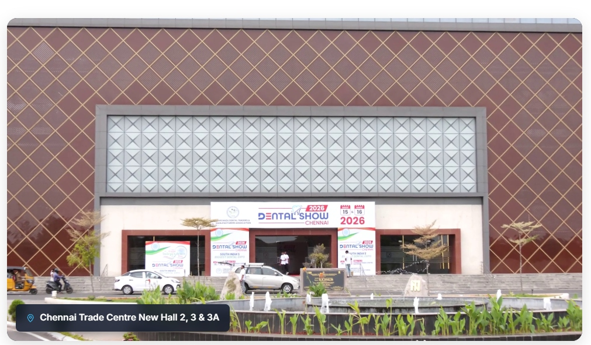

Supply Integrity & Verified Warranties
Enforcing strict standards so every handpiece, biomaterial, and operatory system carries verified manufacturer warranties and direct after-sales service.



At the turn of the millennium, Tamil Nadu's dental community faced a critical challenge: advanced clinical technologies were hard to procure, imported supplies carried steep markups, and practitioners lacked direct access to authorized equipment makers. To bridge this divide, pioneer dental trade leaders joined hands to establish TNDTMA. What began as an effort to organize the trade has transformed into South India's most influential dental movement—uniting technology, clinical mentorship, and professional growth.
Connecting clinics from Chennai to Coimbatore and Madurai directly with global equipment makers, removing multi-layered markups and guaranteeing authentic CE/FDA certifications.
Ensuring operatory chairs, digital autoclaves, intraoral sensors, and CAD/CAM units are supported by trained local biomedical engineers and prompt spare parts availability.
Collaborating with premier dental universities so that graduating scholars gain hands-on proficiency with cutting-edge equipment before beginning private clinical practice.
A community-centered journey powered by innovation and dental trade unity across Tamil Nadu.
Pioneer dental trade leaders recognize the urgent need for a unified state body to eliminate supply bottlenecks and support local practitioners.
✓ Trade Unity FormedTNDTMA is officially registered under the Tamil Nadu Societies Act. That same year, the first landmark Dental Show debuts in Chennai.
✓ TNDTMA RegisteredDental Show expands into South India's premier B2B expo, introducing live surgical workshops, digital radiography, and hands-on masterclasses.
✓ Digital CAD/CAM EraCelebrating two decades of trust, empowering over 10,000 dental delegates annually and establishing Chennai as South India's dental innovation capital.
✓ 10,000+ DelegatesThe landmark 20th Milestone Edition at Chennai Trade Centre (6–7 Feb 2027)—unveiling AI diagnostics, 3D biomaterials, and next-gen prosthetics.
✓ CTC · 6–7 Feb 2027Backing private dental clinics, hospital departments, and educational institutions with transparent equipment pricing, verified warranties, and ethical trade governance.
Enforcing strict standards so every handpiece, biomaterial, and operatory system carries verified manufacturer warranties and direct after-sales service.
Uniting authorized suppliers across all 38 districts of Tamil Nadu to ensure rapid doorstep delivery, maintenance, and emergency clinic repairs.
Partnering with certified dental academies to conduct high-yield, hands-on clinical masterclasses that award recognized continuing education credits.
Providing freshly graduated BDS and MDS clinicians with specialized equipment financing guidance, startup bundles, and expert operatory layout advisory.
Dental Show and TNDTMA unite every sector of South India's dental ecosystem. Select any stakeholder group below to explore dedicated initiatives, technologies, and clinical opportunities.
Bridging commercial technicians with state-of-the-art milling systems, sintered ceramics, and CAD design software, ensuring dental labs deliver world-class aesthetic and functional restorations.

Step through each era with Mr. Dentalshow, our official ambassador guide. Watch the auto-cycling timeline or select any milestone year to relive the breakthroughs that shaped modern dentistry.

Around 2000, dental trade leaders envisioned a united community to strengthen Tamil Nadu's dental industry, bridge technology gaps, and help practitioners access quality equipment.
Why the beaver? Nature's greatest builders possess teeth that never stop growing, naturally reinforced with iron, making them an enduring symbol of dental strength, persistence, and meticulous precision!
Our friendly ambassador, Mr. Dentalshow, welcomes thousands of clinicians, students, and exhibitors to Chennai Trade Centre, embodying the spirit: “See. Touch. Feel. Experience.”